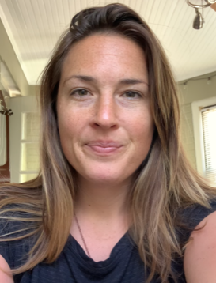

McKynlee Westman Resume
Email: mckynlee.westman@gmail.com • Phone: 816-807-1332
PROFESSIONAL SUMMARY
Former bicycle-tour-guide-in-Italy turned full stack software developer. I am still as particular about my pasta as I am about the organization of my code! Past teams have chosen me as a leader; I have a lot of empathy and embrace feedback as a way for me and my teammates to grow.
WORK EXPERIENCE
Prime Digital Academy, StudentDecember 2020-April 2021
F.L.U.E.N.T. application
- I created this application to compensate for the lack of personalization in popular language-learning tools.
- Users may follow two paths:
- Learners register, select an instructor with whom to pair, regularly complete language challenges which they can have the website read aloud for them in native Spanish (!!), and receive tailored feedback from their instructor.
- Instructors register, set a limit for how many learners they would like to be paired with (this limit is protected by the application), review challenge submissions from their learners and leave each of them tailored feedback.
- I built this application with React, Redux, Redux-Sagas, Node.js, Express.js, HTML, CSS, Lorem Picsum API and JS Web Speech API.
TriCom Technical Services, Technical RecruiterDecember 2019-present
- Employ diligent work ethic, creativity, social intelligence, technical aptitude and grit to meet performance goals.
- Utilize technical language to effectively communicate with candidates.
- Expert at managing Applicant Tracking System (ATS).
- Provide dedicated service and support to the IT workforce by providing market insight, advocating for candidate’s talents, negotiating salary requirements, providing interview coaching and being an open, transparent, honest and supportive communicator.
- Partake in Diversity and Inclusion seminars, and actively work to improve as an employee, colleague and individual member of society.
Backroads Active TravelJune 2012-November 2019
Backroads Italy Field Manager, Tuscany; ItalyOctober 2016-November 2019
- Created and maintained systems to better support leaders and improve quality by managing business operations in Italy: interviewed; hired and trained new leaders with an emphasis on Diversity and Inclusion, developed curriculum and presented continuing education to returning leaders, as well as performed ongoing coaching tailored to each leader’s performance.
- Researched, proposed, and coordinated both the legal status as well as the Logistical support of Backroads’ Italy operations:
- Performed market research to propose new business offerings to Trip Development Director and CEO.
- Negotiated contractual relationships by communicating in Italian with local subcontractors.
- Created marketing material to increase sales of Backroads trips in Italy.
- Managed budget for trip itineraries to balance profit margin with sales maximization.
- Acted as team lead of Tuscany warehouse, gave performance reviews to 16 leaders and 5 office staff.
Backroads Trip Leader/Trip Expert, various locationsJune 2012-2016
- Guided 6-day active travel vacations ranging from camping in the outdoors to staying in luxury 5-star inns.
- Provided excellent service all hours of the day to guests: organized large group dining venues and sleeping arrangements, facilitated subcontractor service quality, acted as bike mechanic, translator and cultural guide.
- Responsible for developing Piedmont to Portofino hiking trip from the ground up: designed itinerary, found and negotiated with local subcontractors, and ensured guest satisfaction with the itinerary and Trip Leaders.
- Hired in November 2013 as a blog writer for Backroads: http://www.backroads.com/blog/author/McKynlee/
Rutherford Grill Restaurant Manager, Napa Valley; CAJuly 2011-June 2012
- 65+ hour fast-paced weeks, ensuring guest satisfaction, employee performance and food quality.
- Responsible for front-of-house service quality; managed shift schedule.
- Interviewed server candidates and honed skills in identifying potential.
- Oversaw $20,000 restaurant operations account; managed restaurant supplies and equipment by interacting with food service suppliers, ordered supplies, kept track of payments, and managed account budget.
EDUCATION & CERTIFICATIONS
Full Stack Software Engineering Certificate2021
Prime Digital Academy,Kansas City; MO
- Full Stack Javascript development: HTML, CSS, JS, JQuery (AJAX/XHR), Node.js, React, Reduct, Express.js, Python, Flask, Postman, Postico, PostgreSQL, SQL, Git, Github, Atom, VS, Bootstrap.
- Intensive and in-depth work with the PERN stack. Practiced collaborating with teammates in a remote environment, giving effective public presentations, and learning best practices for making code that makes it easy for others to step in and collaborate.
Bachelor of Arts: Molecular, Cellular and Developmental Biology 2011
Yale University,New Haven; CT
World Bicycle Relief (WBR) Ambassador, RemoteJan 2019-Dec 2019
- One of Five Backroads employees selected to represent WBR and raise awareness for WBR’s mission.
- Personally raised $3,752 in donations to fund bicycle purchase and delivery to school children in Africa who had a lack of transportation, as well as funded local training to maintain the bicycles.
Yale University Varsity Softball Team Captain, New Haven; CTMay 2010-May 2011
- Voted by teammates Yale Softball Varsity Team Captain 2010-2011
- Barbara E. Chou Outstanding leadership award 2008; gained as a freshman
- Kiphuth Leadership Academy Veteran Leader, 2008-present